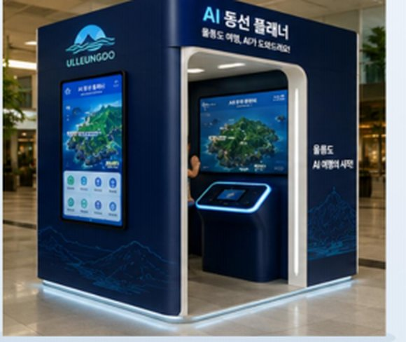
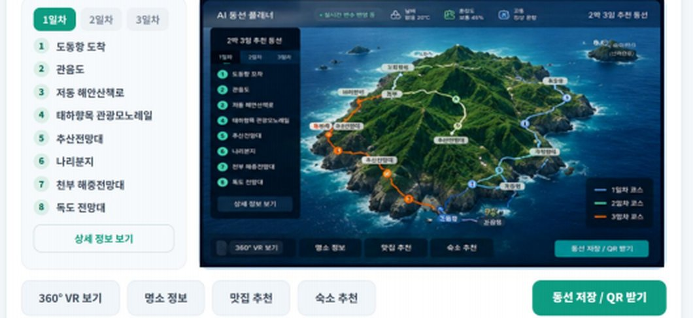

앱 없이도, 인터넷 없이도 — 현장에서 바로 체험하는 울릉도 맞춤형 AI 여행 동선 추천 서비스입니다.
여객선 터미널·박물관 등 주요 거점에 설치된 사이니지 부스에서 울릉도 맞춤형 AI 여행 동선을 현장에서 바로 체험합니다. 디지털 경험이 오프라인으로 확장됩니다.

울릉도 3D 지형 위에서 추천 동선과 주요 명소 정보를 실감나게 확인합니다.
여행 스타일에 맞춘 최적 동선을 날씨·교통·혼잡도 변화에 따라 자동으로 최적화합니다.
인생네컷 촬영·QR 전송부터 울릉도 기념품 현장 구매까지 자연스럽게 이어집니다.

여행 테마 · 인원 · 일정을 간단히 선택해요.
실시간 변수를 분석해 최적 동선을 추천받아요.
추천 동선을 울릉도 3D 지형 위에서 확인해요.
인생네컷 촬영 후 출력하거나 QR로 전송해요.
인생네컷과 울릉도 기념품을 현장에서 만나요.
개인화 취향과 상황에 맞는 최적의 여행 경험 제공
날씨·교통·혼잡도 등 실시간 정보 기반 최적 동선
인생네컷·디지털 별맵으로 여행이 손끝에 남아요
기념품·관광상품 연계로 지역 경제 활성화 기여
스마트한 여행 경험으로 울릉 관광 만족도 제고